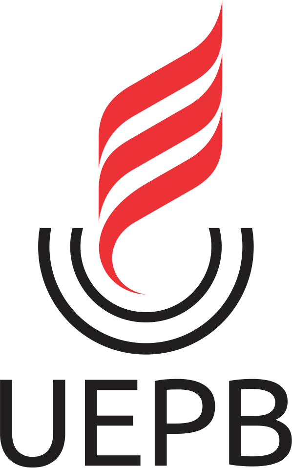
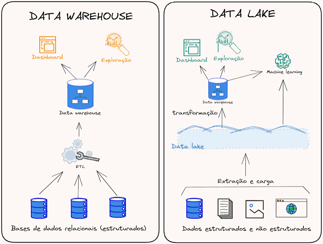
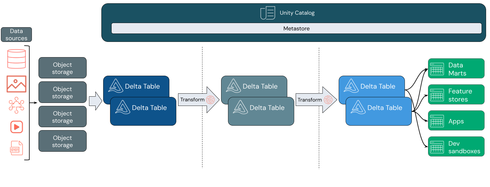
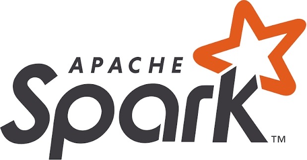
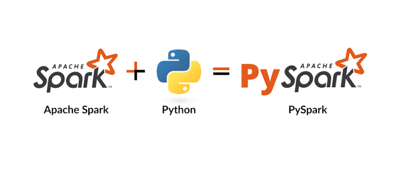

Engenharia de Dados com Databricks e PySparkEstatística e Ciência de Dados - UEPB
Minicurso WANDA — UEPB
Graduação em Estatística e Ciência de Dados
Repositório do projeto: https://github.com/pedroallmeiida/minicurso_databricks_wanda
É a área que projeta e mantém os sistemas que tornam os dados disponíveis, confiáveis e utilizáveis.
A Engenharia de Dados cria as condições para que análises e decisões sejam reproduzíveis e confiáveis.
O trabalho acompanha o dado desde sua origem até o uso:
Na nuvem, organizações contratam recursos computacionais e serviços pela rede, sob demanda.
Cloud não elimina a arquitetura ou a operação: muda quem administra cada parte e como os recursos são consumidos.
| Modelo | O que o provedor entrega | Exemplo de responsabilidade do cliente |
|---|---|---|
| IaaS — infraestrutura | Máquinas virtuais, rede e discos | Instalar e administrar sistema operacional e aplicações |
| PaaS — plataforma | Ambiente gerenciado para desenvolver e executar aplicações | Construir soluções e administrar dados e permissões |
| SaaS — software | Aplicação pronta acessada pela internet | Configurar o uso e administrar usuários/conteúdo |
Mesmo usando serviços gerenciados, o engenheiro de dados continua responsável por:
Big Data descreve cenários em que escala, velocidade ou diversidade tornam insuficientes abordagens tradicionais isoladas.
| Forma | Características | Exemplos de formatos |
|---|---|---|
| Estruturados | Campos e tipos definidos, organizados em tabelas | tabelas relacionais, CSV |
| Semiestruturados | Estrutura marcada, mas flexível ou variável | JSON e XML |
| Não estruturados | Não seguem naturalmente um esquema tabular fixo | texto, imagens, áudio, vídeo |
O formato influencia leitura, compressão, evolução do esquema e custo de processamento.
| Formato | Organização | Uso comum |
|---|---|---|
| CSV | Texto delimitado, legível, sem tipos ricos embutidos | Troca simples de dados e pequenas extrações |
| JSON | Texto semiestruturado, flexível e aninhável | APIs, eventos e documentos |
| Parquet | Binário colunar, tipado e comprimido | Análises e armazenamento em data lakes |
| ORC | Binário colunar com compressão e estatísticas | Consultas analíticas em ecossistemas Hadoop |
Bancos relacionais organizam dados em tabelas com colunas, tipos e relações.
São fundamentais para aplicações transacionais, cadastros, pagamentos e muitos outros sistemas. Não estão obsoletos: continuam sendo uma ferramenta adequada para inúmeros problemas.
As dificuldades aparecem quando se tenta usar um banco transacional como única solução para grandes cargas analíticas:
Em um banco de dados orientado a linhas, os atributos de cada registro são armazenados conjuntamente, de forma que uma linha completa possa ser recuperada com eficiência.
| pedido_id | cliente | cidade | |
|---|---|---|---|
| 101 | Ana | Campina Grande | |
| 102 | Rui | João Pessoa | |
| 103 | Lia | Campina Grande |
✅ Recupera-se a linha completa facilmente
✅ Adequado a transações pequenas e frequentes
✅ Ótimo para bancos relacionais como PostgreSQL, MySQL, SQL Server e Oracle
❌ Pode exigir leitura de muitos dados quando uma consulta analítica usa poucas colunas de muitas linhas
❌ A compressão tende a ser menos eficiente que em dados colunares homogêneos
Em um sistema orientado a colunas, valores da mesma coluna ficam agrupados.
| pedido_id | cliente | cidade | |
|---|---|---|---|
| 101 | Ana | Campina Grande | |
| 102 | Rui | João Pessoa | |
| 103 | Lia | Campina Grande |
Registro por coluna:
✅ Em uma consulta, apenas as colunas selecionadas precisam ser lidas
✅ Bom para agregações e consultas que leem poucas colunas de muitas linhas
✅ Valores semelhantes favorecem compressão e leitura seletiva
✅ Adequado a data warehouses e análises em grande escala
❌ Atualizar um registro isolado é menos eficiente: como os valores de uma mesma linha ficam espalhados por colunas diferentes, é preciso localizar e reescrever blocos em cada coluna afetada
❌ Em cargas com muitas alterações (updates e deletes frequentes), essa reescrita constante dos arquivos eleva o custo de processamento
Imagine uma tabela de pedidos com estas colunas:
| pedido_id | cliente | estado | valor |
|---|---|---|---|
| 101 | Ana | PB | R$ 120 |
| 102 | Rui | PE | R$ 80 |
| 103 | Lia | PB | R$ 60 |
Por linha: Quais são os dados do pedido 102?
O banco localiza o registro de cada atributos e os lê em conjunto.
É comum em bancos transacionais como PostgreSQL e MySQL.
Por coluna : Quanto foi vendido em cada estado?
Para responder, basta ler as colunas estado e valor;
É eficiente para agregar muitas linhas lendo poucas colunas.
NTFS (New Technology File System) — padrão do Windows, usado em discos internos de desktops e notebooks
ext4 (Fourth Extended File System) — comum em distribuições Linux, presente em servidores e máquinas pessoais
APFS (Apple File System) — padrão da Apple (macOS e iOS), otimizado para SSDs
FAT32 (File Allocation Table, 32 bits) e exFAT (Extended FAT) — usados em pendrives e cartões de memória, pela compatibilidade entre sistemas operacionais
Um cluster é um conjunto de computadores (chamados de nós) conectados em rede que trabalham juntos como se fossem um único sistema.
Cada nó contribui com seus próprios recursos: processador, memória e disco.
As tarefas são divididas entre os nós, permitindo processar em paralelo volumes de dados que uma única máquina não daria conta.
Se um nó falha, os demais assumem o trabalho — o sistema continua funcionando (tolerância a falhas).
É sobre clusters que rodam ferramentas como Hadoop, Spark e o próprio Databricks.
Sistema de arquivos que permite que o acesso a arquivos e dados seja transparente, independentemente de onde os dados estejam fisicamente armazenados, geralmente em vários nós de um cluster.
Projetado para armazenar e analisar grandes volumes de dados de maneira distribuída e paralela em um cluster de computadores.
Divide os arquivos em blocos, distribuindo em todo cluster para permitir armazenamento e processamento paralelo.
Exemplos incluem HDFS (Hadoop Distributed File System) e sistemas de arquivos distribuídos em nuvem, como Amazon S3 e Azure Data Lake Storage.
É o sistema de arquivos distribuído do Databricks, integrado à plataforma.
Permite armazenar dados de forma persistente e acessá-los de qualquer cluster Databricks.
Suporta operações típicas de sistemas de arquivos, como leitura, gravação e listagem de arquivos.
Pode ser usado para armazenar dados brutos, resultados intermediários e notebooks em python/R.
Para tarefas de processamento de dados, o Databricks utiliza o Apache Spark.
Repositório analítico organizado para consultas, relatórios e indicadores.
Exemplos de serviços: Snowflake, BigQuery, Amazon Redshift e Microsoft Fabric Warehouse.
Armazenamento escalável para dados em estado bruto ou transformado, em diferentes formatos.
Warning
Um diretório cheio de arquivos não se torna, sozinho, um Data Lake confiável. Catálogo, segurança, qualidade, metadados e gestão do ciclo de vida são partes da arquitetura.

Fonte: https://www.programaria.org/
Delta Lake é um formato de tabela aberto que acrescenta metadados e transações a arquivos de dados, comumente Parquet, em armazenamento de objetos.
Lakehouse é uma abordagem que combina flexibilidade e armazenamento de baixo custo de um data lake com capacidades de gestão e análise associadas a warehouses.

Fonte: Databricks
O conceito Medallion no Databricks organiza os dados em camadas, facilitando a ingestão, limpeza, integração e análise.

Apache Foundation: https://www.apache.org/projects/
Apache Spark é um motor open source de processamento distribuído.
Spark não é um banco de dados nem um serviço de armazenamento: é principalmente um motor de computação.

PySpark é a API Python do Apache Spark.
https://www.databricks.com/
Databricks é uma plataforma de dados e IA em nuvem fundada pelos criadores do Apache Spark.
Note
Databricks não é o Apache Spark: Spark é um projeto open source; Databricks é uma plataforma que utiliza Spark e adiciona serviços, ferramentas, integrações e componentes próprios.
| Apache Spark | Databricks |
|---|---|
| Motor de processamento open source | Plataforma gerenciada de dados e IA |
| Executa aplicações em infraestrutura configurada | Provisiona e administra ambientes de compute |
| Inclui APIs e engine de execução | Disponibiliza notebooks, jobs, ferramentas SQL e integrações |
| Pode ser instalado ou usado em diferentes serviços | Usa Spark, com otimizações e componentes específicos da plataforma |
Analogia: Spark é o motor de processamento; Databricks oferece o veículo, os controles e os serviços ao redor do motor.
Os nomes e funcionalidades exatos evoluem; verifique a documentação e disponibilidade do ambiente utilizado.
Na etapa de prática, vamos conduzir a construção de um pipeline com dados de comércio eletrônico da Olist:
Repositório do projeto: https://github.com/pedroallmeiida/minicurso_databricks_wanda
Baixar os dados: https://www.kaggle.com/datasets/olistbr/brazilian-ecommerce